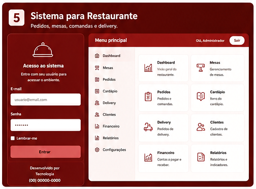
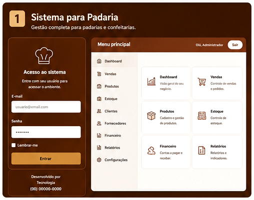
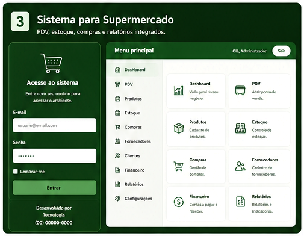

SAÚDE
Gestão para clínicas
Agenda, pacientes, atendimento, operação e indicadores em um ambiente centralizado.
Ver case →Sistemas web, automação, inteligência artificial, dashboards e sites estratégicos desenvolvidos a partir da operação real de cada cliente.


Projetos digitais desenvolvidos para resolver rotinas concretas e dar mais controle à operação.
Agenda, pacientes, atendimento, operação e indicadores em um ambiente centralizado.
Ver case →Caixa, pagamentos, fiado, fechamento e acompanhamento gerencial.
Ver case →
Informação organizada, protocolos e visão gerencial para equipes públicas.
Ver case →A HelenIA é a camada inteligente presente nos projetos da Camacho Tecnologia. Em cada sistema, ela assume um papel adequado à operação: atendimento, coleta de informações, organização de processos, análise de dados autorizados e apoio à decisão.
Conte como sua empresa trabalha hoje. O diagnóstico começa pelo problema, não pela ferramenta.